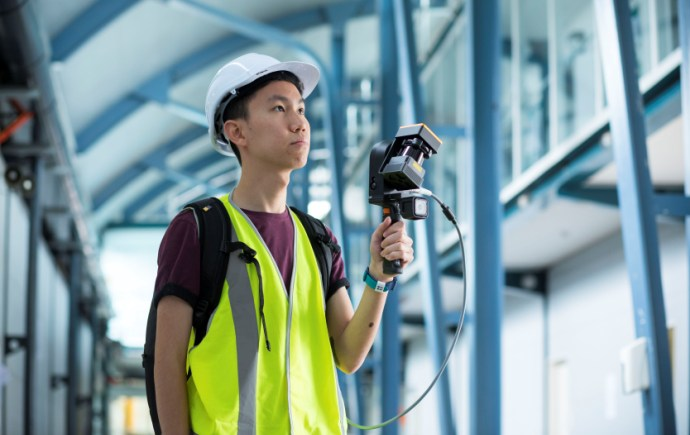
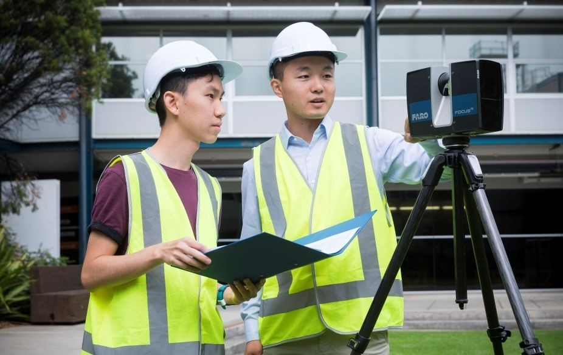
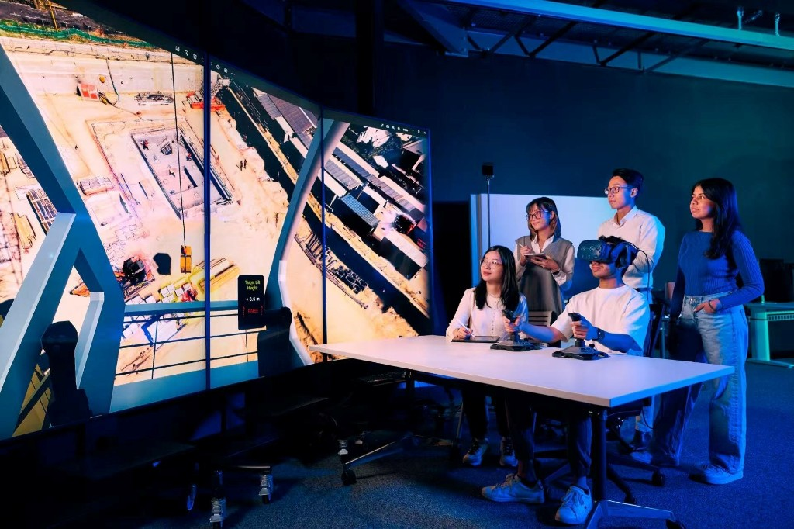

Our Visualisation Lab is equipped with advanced data capture, processing, and visualisation technologies that support research, teaching, and industry engagement across the built environment. The Lab’s capabilities include terrestrial and handheld 3D laser scanners, a fleet of drones including the DJI Neo 2, Mavic Pro, and Matrice 350 RTK, and high-fidelity Virtual Reality and Mixed Reality systems including the Meta Quest 3, HTC Vive Pro 2, and Varjo XR-4. The Lab also features an immersive 180-inch, 33-megapixel 4K screen wall for large-scale data visualisation, collaborative design review, and interactive simulation.


